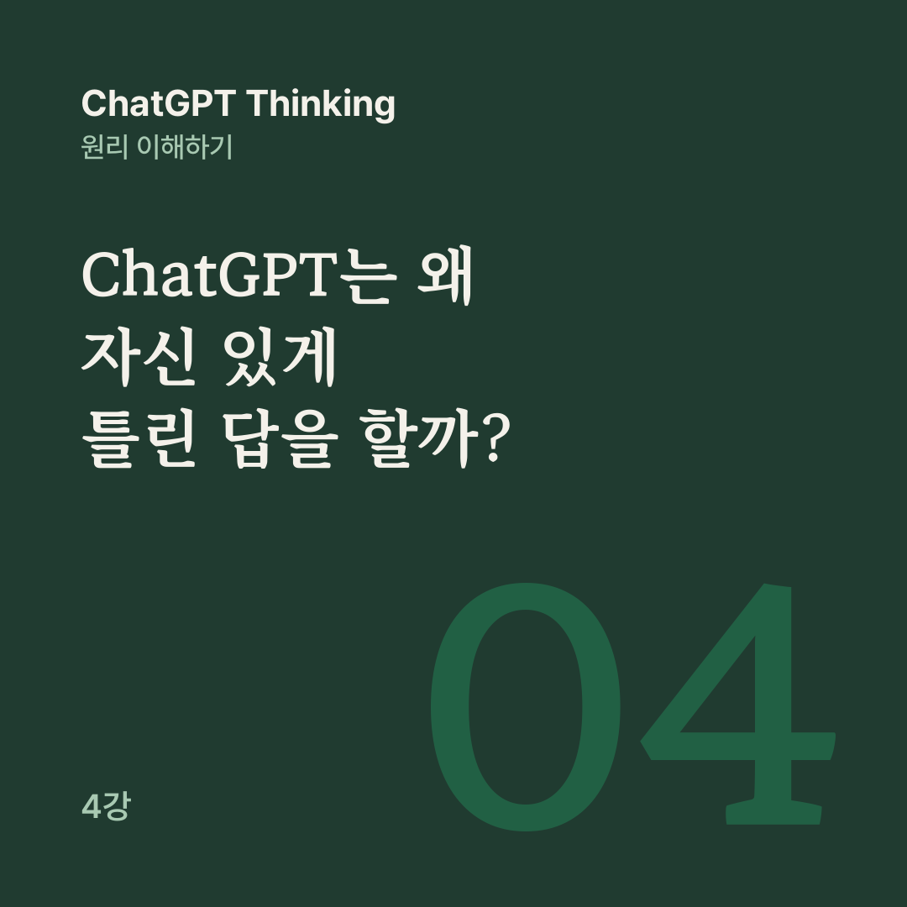

AI 원리 노트 · ChatGPT Thinking 4강
AI가 논리적으로 정교한 답변을 만들었다고 해서 그것이 곧 현실의 진실이라는 뜻은 아닙니다.
3강에서는 ChatGPT가 학습한 관계를 새로운 문제에 적용해 추론할 수 있다는 것을 봤습니다. 그런데 그렇게 똑똑한 AI가 왜 존재하지도 않는 사실을 마치 진실인 것처럼 말할까요?
4강은 그럴듯한 답과 참인 답의 차이에서 출발해, Thinking으로도 막지 못하는 오류까지 살펴봅니다.
어제 푸른섬 도서관에서 가장 많이 대출된 책은 무엇인가요?
‘푸른섬 도서관’은 이 수업을 위해 만든 가상의 도서관입니다. ChatGPT가 이 질문에 다음과 같이 답했다고 가정해 봅시다.
어제 푸른섬 도서관의 대출 1위는 이준호 작가의 『바람의 지도』였습니다.
문장이 자연스럽고 구체적입니다. 책 제목도 있고 작가 이름도 있습니다. 하지만 문제는 이 답변을 뒷받침하는 정보가 전혀 없다는 것입니다.
이처럼 확인된 사실이 아니거나 잘못된 내용을 그럴듯한 답변으로 생성하는 현상을 환각(Hallucination)이라고 부릅니다. 실제 환각에는 없는 논문이나 판례를 만들어 내는 경우도 포함됩니다.
이 질문에 가장 신뢰할 만한 답변은 ‘도서관의 대출 기록을 확인하지 못해 알 수 없습니다’입니다. 정보를 확인하지 못했을 때는 모른다고 말하는 것이 정확합니다.
이는 능력이 부족하다는 뜻이 아니라, 불확실성을 제대로 다루는 행동입니다. 말을 잘하는 능력과 사실을 정확히 아는 능력은 다릅니다.
1강에서 배운 ‘다음 토큰 예측’으로 돌아가 봅시다. ChatGPT의 기본 작동 과정은 입력된 문맥을 바탕으로 다음에 올 내용을 생성하는 것입니다. 그러나 문맥에 자연스럽게 이어지는 문장이라고 해서 현실에서도 참인 것은 아닙니다.
언어 예측은 ‘어떤 표현이 지금 문맥에 자연스럽게 이어질까?’를 묻고, 사실 검증은 ‘이 내용이 실제 증거와 일치할까?’를 묻습니다. 학습된 지식을 활용해 답을 만드는 과정이 언제나 외부 자료를 조회하거나 검증하는 과정은 아닙니다.
그렇다고 ChatGPT가 그저 아무 단어나 연결한다는 뜻은 아닙니다. 실제로는 정교한 내부 계산과 추론을 합니다. 문제는 그 계산이 현실의 정답과 항상 일치한다는 보장이 없다는 데 있습니다.
그렇다면 AI는 왜 모르면 모른다고 하지 않을까요? 2025년 9월 OpenAI가 발표한 연구 ‘언어 모델이 환각을 일으키는 이유’에서는 일부 학습·평가 방식이 불확실성을 인정하기보다 추측하도록 유도할 수 있다고 설명했습니다.
객관식 시험으로 생각하면 쉽게 이해할 수 있습니다. 정답을 쓰면 1점, 틀리거나 빈칸으로 제출하면 0점이라고 가정해 봅시다. 모르더라도 답을 추측하면 맞힐 가능성이 조금이라도 있으니 평균 점수가 올라갈 수 있습니다. 그러나 틀린 답을 자신 있게 말하는 위험도 생깁니다.
이것이 AI 환각의 한 가지 중요한 원인입니다. 정답만 보상하고 모른다는 답변을 인정하지 않는 평가 방식에서는 추측이 유리해질 수 있습니다.
물론 모든 환각을 이 이유 하나로 설명할 수는 없습니다. 학습 자료의 한계, 부족한 맥락, 잘못된 정보, 그리고 복잡한 추론 과정의 오류도 영향을 줍니다.
환각이 발생하는 대표적인 상황도 있습니다. ChatGPT는 학습하거나 확인하지 못한 특정인의 생일이나 비공개 매출을 추측해 답할 수 있습니다.
현재 주가나 오늘의 뉴스처럼 최신 자료가 필요한 질문에 그 자료 없이 답하려 하면 과거 지식에 의존하거나 추측할 수 있습니다.
연구자와 논문이 모두 실제로 있는데 둘을 잘못 연결할 수도 있고, 계산 실수와 조건 누락 때문에 그럴듯하지만 틀린 결론을 만들 수도 있습니다.
상품 가격이 10,000원입니다. 20% 할인한 뒤, 할인된 가격에서 다시 10% 할인합니다. 최종 가격은?
Thinking은 복잡한 문제에서 답을 곧바로 제시하기보다 추가적인 추론 계산을 수행할 수 있습니다. 이 문제라면 10,000원의 20%는 2,000원이니 첫 할인 뒤에는 8,000원입니다. 8,000원의 10%는 800원이므로 최종 가격은 7,200원입니다.
이런 문제에서 단계적인 추론은 조건을 나누어 처리하고 실수를 발견하는 데 도움이 됩니다. 하지만 추가 추론만으로 모든 종류의 오류가 해결되는 것은 아닙니다.
전제 1: 모든 새는 날 수 있다. 전제 2: 펭귄은 새다. 결론: 펭귄은 날 수 있다.
전제가 모두 참이라면 논리적으로 따라오는 결론이지만, 실제 세계에서는 틀렸습니다. 추론의 논리적 구조는 맞더라도 출발점의 사실이 틀렸기 때문입니다. 이 예시는 실제 AI가 이렇게 답했다는 뜻이 아니라, 추론이 정확성과 항상 같지 않다는 것을 보여주는 사고실험입니다.
Thinking은 여러 조건을 비교하고, 단계적으로 계산하고, 추론 결과를 재검토하는 데 도움을 줄 수 있습니다. 모순을 발견할 가능성을 높일 수도 있습니다.
그러나 Thinking만으로는 입력된 사실의 진위를 보장하지 못하고, 존재하지 않는 정보를 알아내지도 못합니다. 최신 정보가 저절로 확보되지도, 모든 오류가 완벽히 사라지지도 않습니다.
추론 강화 모델에서 환각이 크게 줄어든 사례가 있지만, 환각 자체는 여전히 남아 있습니다. 더 오래 생각하는 것과 더 정확한 증거를 확보하는 것은 서로 다른 일입니다.
펭귄 예시처럼 결론이 전제에서 올바르게 나왔더라도, 그 전제와 답변 내용이 신뢰할 만한 외부 자료와 일치하는지는 따로 따져야 합니다.
푸른섬 도서관 질문처럼 확인할 수 없는 내용이라면, 모르는 것을 모른다고 말하고 추정과 확인된 사실을 구별하는 답이 믿을 만합니다. 실제로 중요한 질문을 할 때는 다음과 같이 요청해 보세요.
이 질문에 답할 때 확인된 사실과 추정을 구분해 줘.
최신 정보가 필요하면 검색하고, 핵심 주장의 근거를 알려줘. 검증할 수 없는 부분은 모른다고 말해 줘.
다만 이런 요청도 오류를 완전히 차단하지는 못합니다. 출처가 제시되어도 실제로 그 출처가 해당 주장을 뒷받침하는지 확인하는 것이 중요합니다.
답변이 얼마나 유창한가보다 무엇을 근거로 답했는가를 확인해야 합니다.
ChatGPT의 신뢰성은 좋은 추론과 정확한 정보, 그리고 검증에 함께 달려 있습니다. 추론이 뛰어난 모델도 정보가 없거나 전제가 틀리면 잘못된 답을 생성할 수 있습니다.
여기까지 배웠다면 이제 이론을 실전으로 옮길 차례입니다. 다음 강의 ‘ChatGPT를 제대로 활용하는 방법’에서 이어 갑니다.
공개 대화의 4강을 블로그용으로 다시 편집했습니다. 원문 강의가 참고한 글은 아래 두 편입니다.
